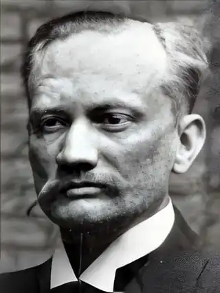
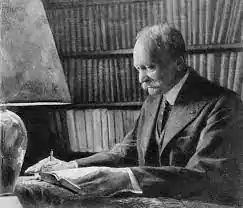

Жозеф Бедьє — французький філолог-медієвіст (розділ історичної науки, який вивчає події, побут, культуру та мистецтво, що характерні для середньовіччя.)
Народився 28 січня 1864 в Парижі.
Жозеф Бедьє за походженням — бретонець. Дитинство провів на о. Реюньйон. В 1883 році вступив до Еколь Нормаль. Відвідував також лекції в Еколь Пратік і Коллеж де Франс, де познайомився з Гастоном Парісом, який став його науковим керівником. В 1889 —1891 рр. викладав в університеті Фрібура, з 1891 року — на філологічному факультеті університету в місті Кан. У роки Першої світової війни працював в Міністерстві оборони. Переклав сучасною французькою і підготував критичні видання "Фабліо" (1893), "Трістана та Ізольди" (1900), " Пісні про Роланда "(1921). Наукову полеміку викликала його книга "Епічні оповіді. Про походження французьких жест "(1908—1913), з її критикою виступив Рамон Менендес Підаль. "Роман про Трістана та Ізольду" в переказі Бедьє переклав українською Максим Рильський. Помер 29 серпня 1938, Гран-Серр, Рона-Альпи.